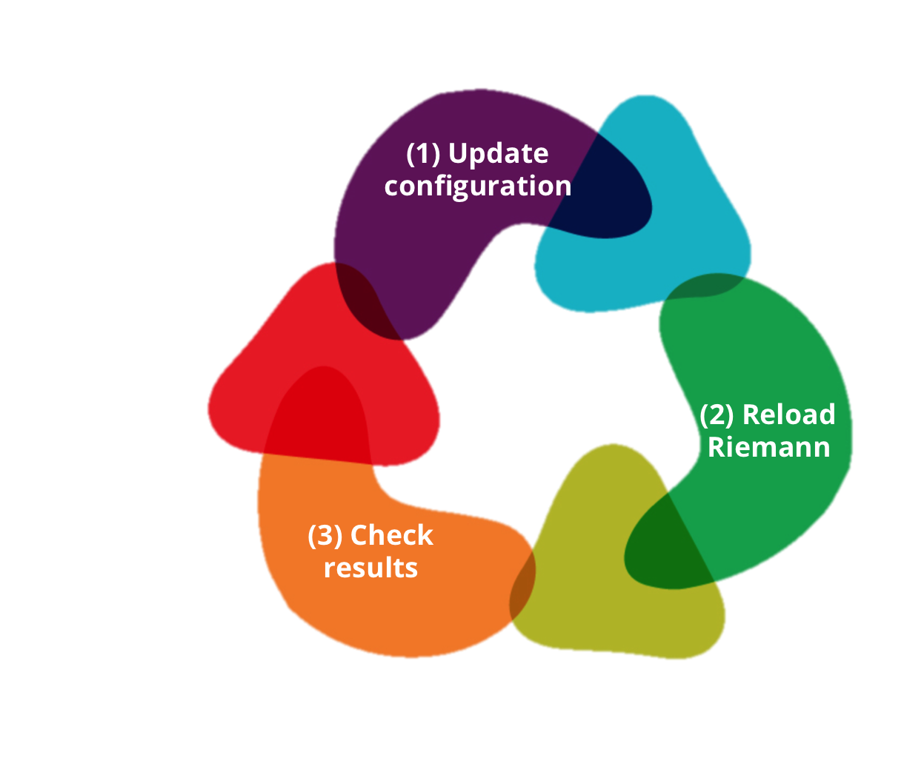

Riemann
http://aphyr.github.io/riemann/
Andy Marks / @andeemarks
A Clojure-based network event stream processing system
Background

Motivation
"Riemann aggregates events from your servers and applications with apowerful stream processing language
"
We might be developers... but are we "just" developers
Objective
Scratch the surface
Key Concepts
Service - entity sending events
Event - struct of fields describing event
Stream - pipelines for event flows
Index - table of the current state of all tracked services, indexed by host + service
Anatomy of an Event
(defstruct event
:host ; "web-server-4"
:service ; "apache"
:state ; "ok"
:time ; 1412679529133
:description ; "/index.html"
:tags ; ["http" "web"]
:metric ; 200
:ttl) ; 5
- Actual declaration in
https://github.com/jdmaturen/reimann/blob/master/proto/riemann/proto.proto - Arbitrary custom events also supported
Configuration
(/etc/riemann/riemann.config)
(let [host "127.0.0.1"]
(tcp-server {:host host})
(udp-server {:host host})
(ws-server {:host host}))
(periodically-expire 5)
(streams prn)
Examples
Appendix: Language Bindings
- Clojure, C, C++, C#
- Erlang
- Go
- Java
- Node
- OCaml
- Perl, Python
- Ruby
- Scala
Appendix: Event Source Support
- Cassandra, Chef, Collectd
- Ganglia, Graphite
- HBase, Himpy
- JMX, JVM Profiling
- Kiries
- Logstash
- Monitorlib, Mysql
- Puppet
- Syslog
More?
- http://player.vimeo.com/video/67181466
Thanks
Andy Marks / @andeemarks